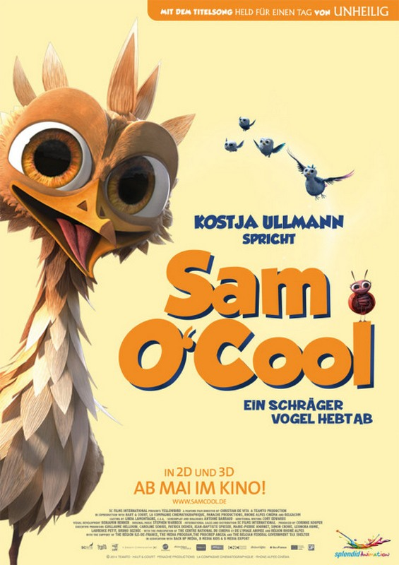

Sam O‘Cool - Ein schräger Vogel hebt ab (© Splendid Film)
Termin: 21.05.2015
Genre: Animation, Familie
Nationalität: F, B
Homepage: http://www.samcool.de/
Jedes Mal, wenn der Herbst naht, macht sich die eingeschworene Vogelschar auf die alljährliche Reise ins entfernte und warme Afrika. Darius (Stimme im Original: Pierre Richard), das Oberhaupt der Truppe, verletzt sich jedoch schwer, daher muss er die Reiseroute und wichtige Tipps für den kräftezehrenden Trip schnellstmöglich an einen anderen Vogel weitergeben. Und so bekommt der kleine Sam (Arthur Dupont / deutsche Fassung: Kostja Ullmann) seine Chance, was bei dessen Artgenossen allerdings auf wenig Begeisterung trifft. Der junge und schreckhafte Vogel ist doch weniger für seine Führungsqualitäten sondern viel mehr für seine Tollpatschigkeit bekannt. Aber es bleibt der gefiederten Gemeinschaft keine andere Wahl. Sie müssen Sam auf dem langen Weg in den Süden zu folgen. Dem Kleinen ist allerdings auch selbst klar, dass er schon über sich selbst hinaus wachsen muss, wenn er seine Mitflieger heil ans Ziel bringen will.